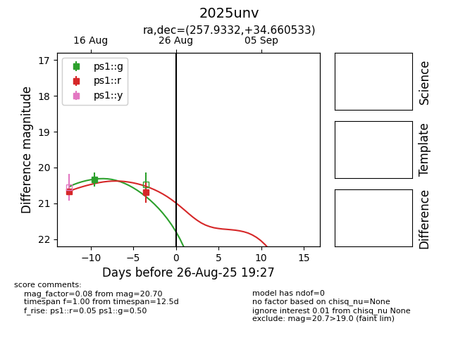

Target 2025unv at 2025-08-26 21:32, see:
YSE: ziggy.ucolick.org/yse/transient_detail/2025unv
alt names
2025unv (yse)
coordinates:
equatorial (ra, dec) = (257.9332,+34.66053)
galactic (l, b) = (57.9477,+34.60022)
photometry
last ps1::g=20.34, ps1::r=20.70
1 ps1::g, 2 ps1::r detections
